03 - Grundlæggende UX
Have merc(h)y on me
I UX-forløbet blev vi introduceret til copywriting, UI-konventioner, prototyping og testen. Ved hjælp af research og analyse skulle vi hver især skabe et koncept til webshop, hvor et af produkterne var T-shirts. Jeg udviklede “Have merc(h)y on me”; et koncept, som støtter op om selvstændige kunstnere, hvor der sælges “merchandise” fra udstillinger m.m. Jeg undersøgte mit koncept vha. research, surveys og interviews for at indsamle data og indsigt i brugernes tanker om og færden på internettet. Vi arbejdede desuden med tænke-højt-tests.
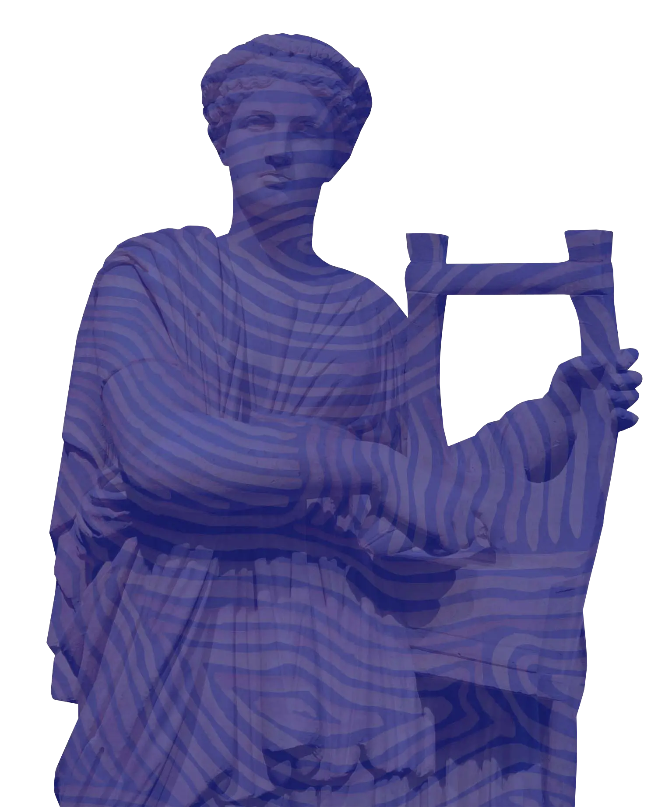
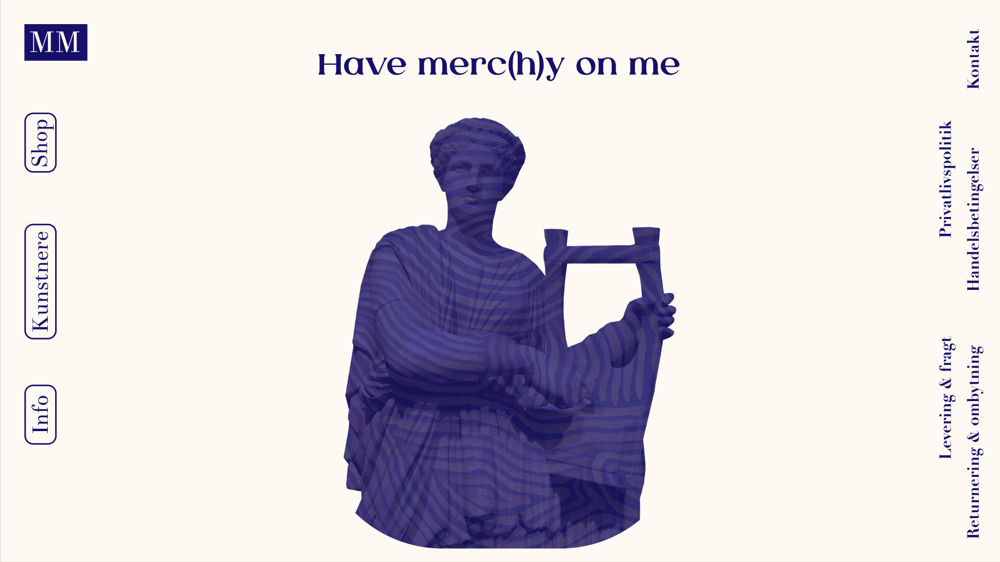
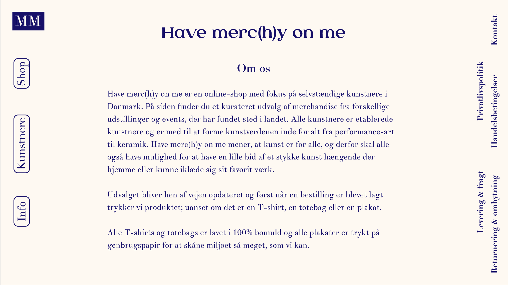
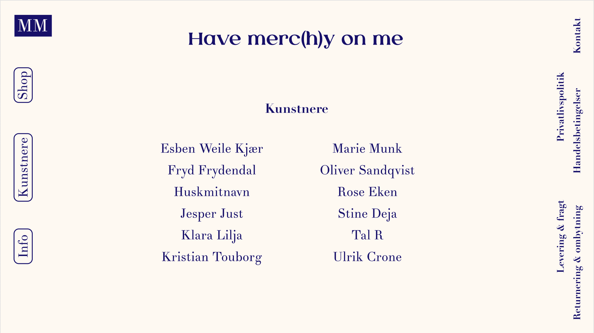
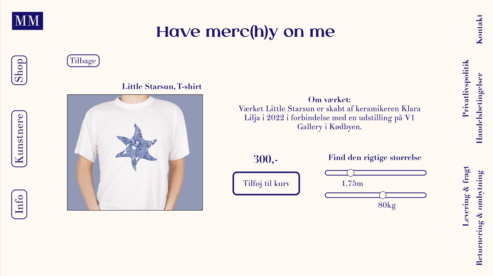
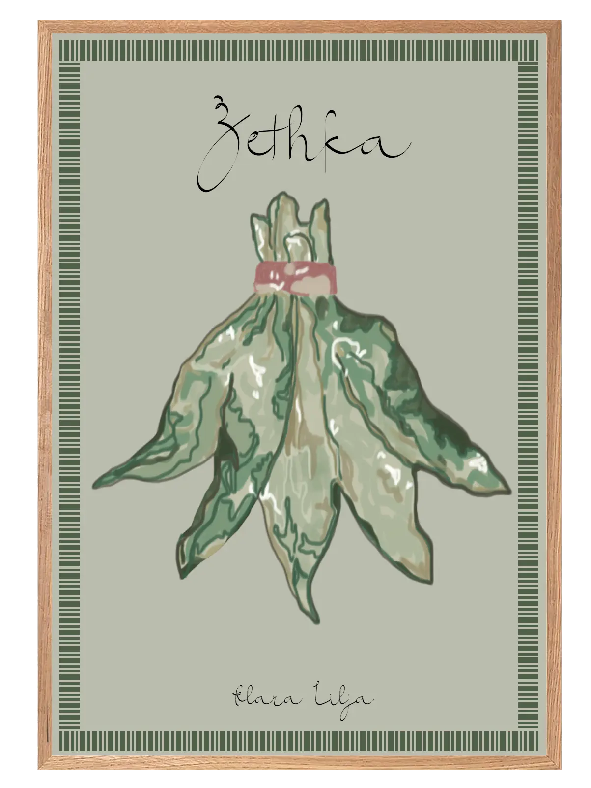
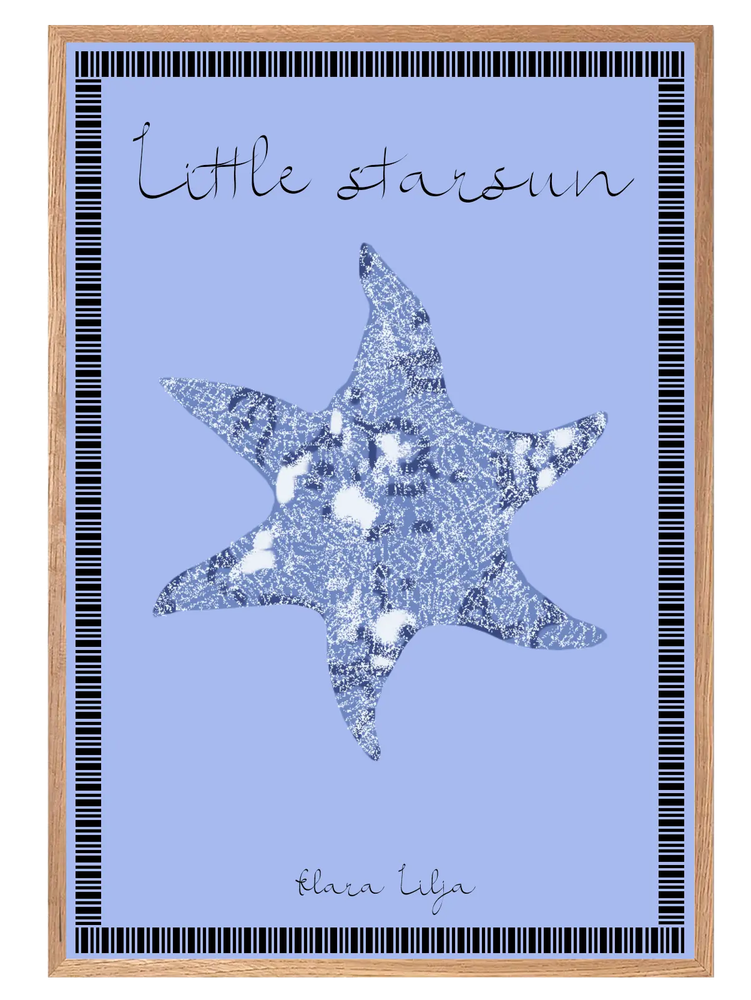
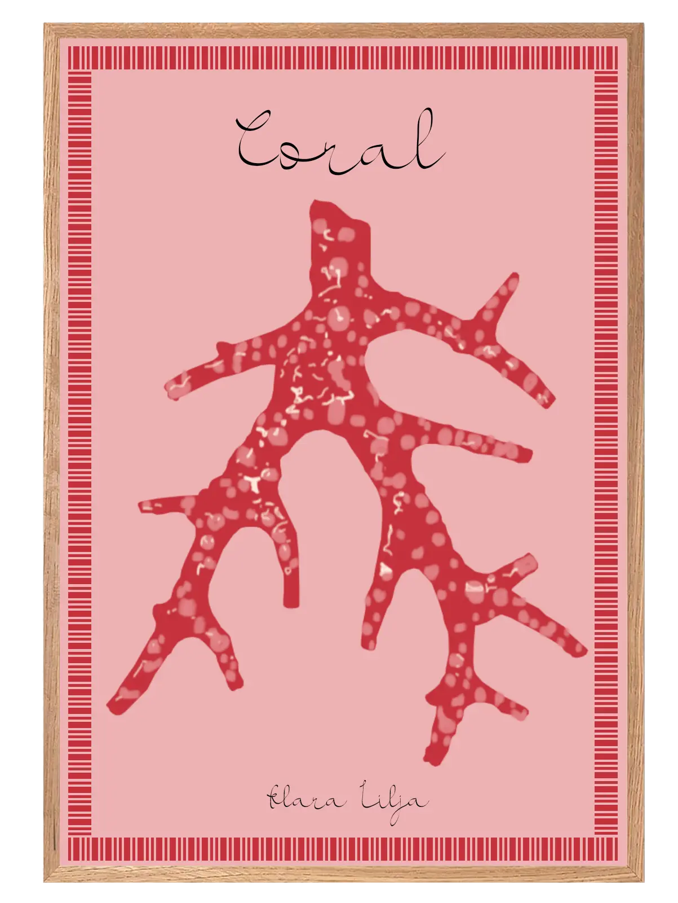
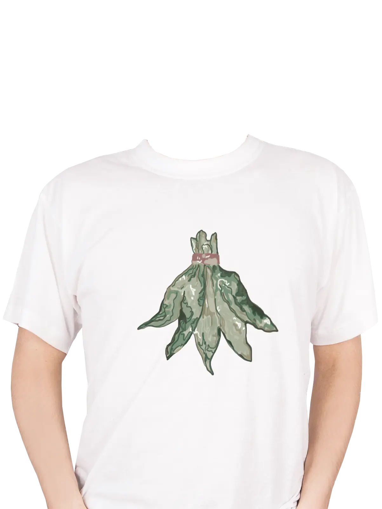
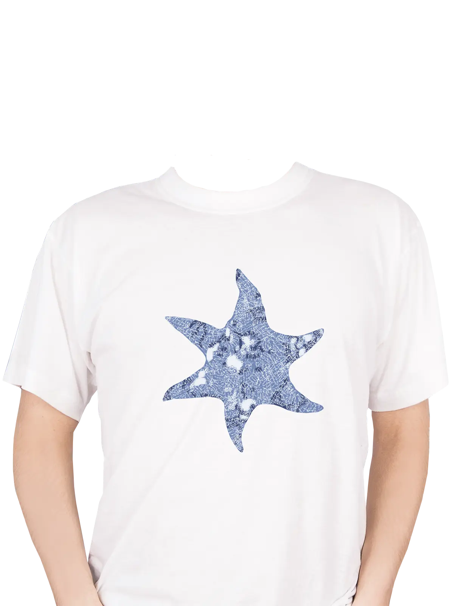
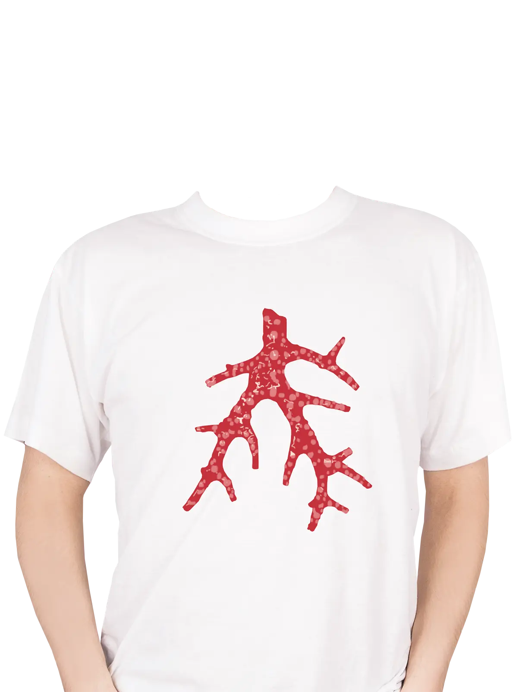
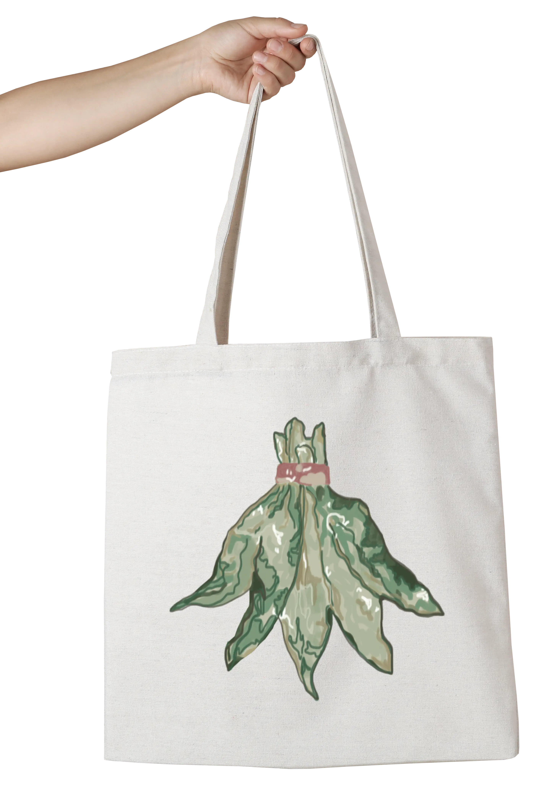
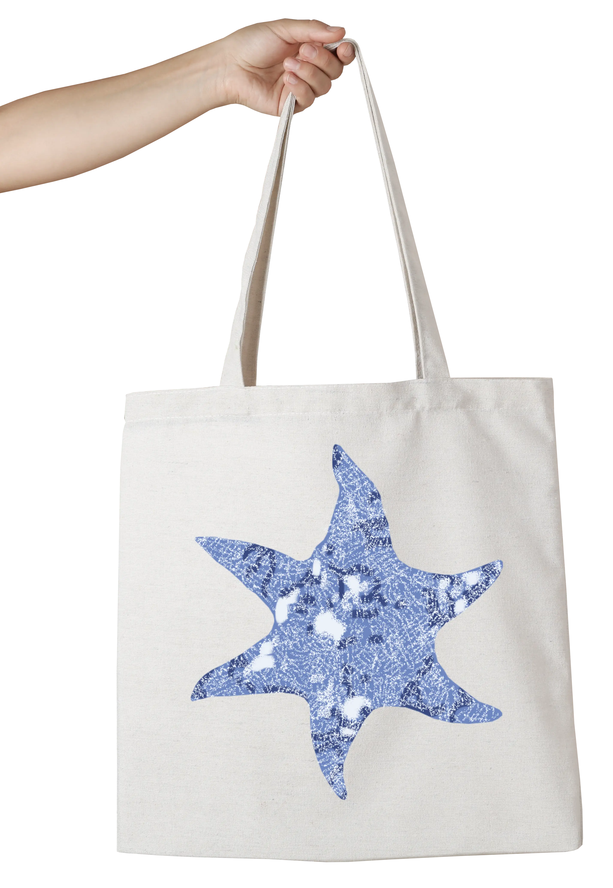
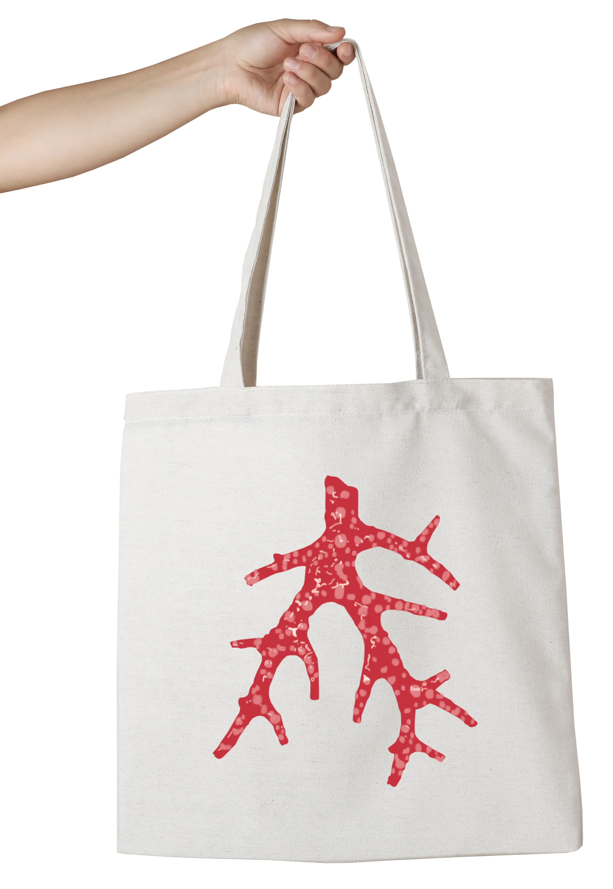